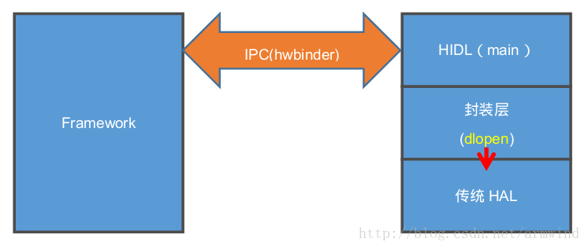
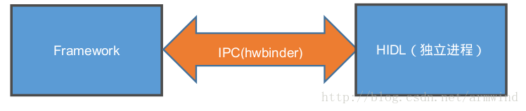
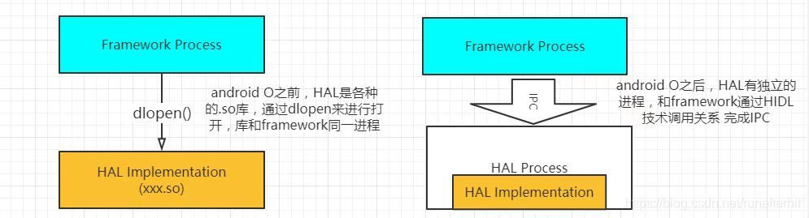

README
Android HIDL绑定方式分析，bms采用直通型，paxserver是采用绑定模式。
refers
概述
从Android 8.0之后，Android 引入Treble机制，主要是为了解决目前Android 版本之间升级麻烦的问题，将OEM适配的部分vendor与google 对android 大框架升级的部分system部分做了分离，一旦适配了一个版本的vendor信息之后，之后的版本再进行升级时，直接升级system即可，这个就不会给OEM厂商升级带来太大的工作量，直接升级最新功能，可以解决目前市面上Android版本过来凌乱的问题。
首先Treble机制在Vendor分区中有两种模式：
一个编译成
so库，供System分区的进程和应用直接加载调用，两者在同一个进程中，这种叫直通式HAL(passthrough)模式。这个是由hidl 封装的hal，具体是在hidl封装处dlopen传统的hal（目前8.0上Camera是这种形式）大概形如如下面这个： 另外一种是直接编译成一个
daemon可运行的服务，然后System分区的进程通过HwBinder的IPC通信方式来调用，两者在二个独立的进程中，这种称为绑定式HAL(Binderized)模式。 
区别
直通模式与 绑定模式最大的区别就是直通模式没有一个独立运行的服务进程，而绑定模式是作为一个独立运行的服务相当于Deamon进程在运行。直通模式是将android 8.0之前的版本的module 封装起来，供System以上的服务进行调用， 上层直接调用 HIDL_FETCH_XXX 来调用此接口的。

代码分析
总体流程
* getService(const std::string &serviceName, const bool getStub)
* getServiceInternal<BpHwMapper>(serviceName, true, getStub)
* vintfHwbinder = (transport == Transport::HWBINDER);//绑定模式
* Return<sp<IBase>> ret = sm->get(descriptor, instance); //绑定模式
* vintfPassthru = (transport == Transport::PASSTHROUGH);//直通模式
* const sp<IServiceManager> pm = getPassthroughServiceManager();//先通过getPassthroughServiceManager ，获取IServiceManager的句柄，然后再get得到对应的服务。
* pm->get(descriptor, instance).withDefault(nullptr);//直通模式
* openLibs(fqName, [&](void* handle, const std::string &lib, const std::string &sym)
* string prefix = packageAndVersion + "-impl";//路径最后组装成/system 或者/vendor 下面的供调用的xxxxx-impl.so
* const std::string fullPath = path + lib;
* dlopen(fullPath.c_str(), dlMode);
具体分析
上面已经说明了直通模式与绑定模式的初始化，现在我们来介绍下如何调用直通模式和绑定模式，两者调用的函数有没有什么区别呢？ 答案是两者使用的调用接口是一样的，都是通过getService 来调用的。
IMapper mMapper = mapper::V2_0::IMapper::getService()
同样getService 也是HIDL的工具生成的函数执行的：
out/soong/.intermediates/hardware/interfaces/graphics/mapper/2.1/android.hardware.graphics.mapper@2.1_genc++/gen/android/hardware/graphics/mapper/2.1/MapperAll.cpp
::android::sp<IMapper> IMapper::getService(const std::string &serviceName, const bool getStub){
return ::android::hardware::details::getServiceInternal<BpHwMapper>(serviceName, true, getStub);
}
sp<IType> getServiceInternal(const std::string & instance, bool retry, bool getStub){
sp<IBase> base = getRawServiceInternal(IType::descriptor, inst/ance, retyr, getStub);
.....
}
sp<::android::hidl::base::V1_0::IBase> getRawServiceInternal(const std::string& descriptor,
const std::string& instance,
bool retry, bool getStub) {
const sp<IServiceManager1_1> sm = defaultServiceManager1_1();
....
//绑定模式
const bool vintfHwbinder = (transport == Transport::HWBINDER);
//直通模式
const bool vintfPassthru = (transport == Transport::PASSTHROUGH);
......
//绑定模式
for (int tries = 0; !getStub && (vintfHwbinder || vintfLegacy); tries++) {
Return<sp<IBase>> ret = sm->get(descriptor, instance);
}
//直通模式
if (getStub || vintfPassthru || vintfLegacy) {
const sp<IServiceManager> pm = getPassthroughServiceManager();
sp<IBase> base = pm->get(descriptor, instance).withDefault(nullptr);
}
....
这里分成了二条路:
绑定模式就直接通过IServiceManager->get的方法去获取，是不是觉得很熟悉，就和AIDL一个套路，通过BpBinder 和 BnBinder 直接对Binder驱动的操作来完成数据交换，但AIDL的binder驱动是/dev/binder, HIDL的hwbinder驱动是/dev/hwbinder,具体的我们就不去详细分析了。直通模式，先通过getPassthroughServiceManager ，获取IServiceManager的句柄，然后再get得到对应的服务。
sp<IServiceManager1_0> getPassthroughServiceManager() {
return getPassthroughServiceManager1_1();
}
sp<IServiceManager1_1> getPassthroughServiceManager1_1() {
static sp<PassthroughServiceManager> manager(new PassthroughServiceManager());
return manager;
}
这里相当于直接new了一个PassthroughServiceManager(), 之后再调用get 方法：
Return<sp<IBase>> get(const hidl_string& fqName,
const hidl_string& name) override {
sp<IBase> ret = nullptr;
openLibs(fqName, [&](void* handle, const std::string &lib, const std::string &sym) {
IBase* (*generator)(const char* name);
//这里就会调用 到sym 也就是HIDL_FETCH_XXX ，然后通过dlsym 去链接调用了。
*(void **)(&generator) = dlsym(handle, sym.c_str());
ret = (*generator)(name.c_str());
});
return ret;
}
static void openLibs(
const std::string& fqName,
const std::function<bool /* continue */ (void* /* handle */, const std::string& /* lib */,
const std::string& /* sym */)>& eachLib) {
std::string packageAndVersion = fqName.substr(0, idx);
std::string ifaceName = fqName.substr(idx + strlen("::"));
const std::string prefix = packageAndVersion + "-impl";
//HIDL_FETCH_XXX 出现了，就是passthrough模式下需要被调用的方法。
const std::string sym = "HIDL_FETCH_" + ifaceName;
.....
std::vector<std::string> paths = {HAL_LIBRARY_PATH_ODM, HAL_LIBRARY_PATH_VENDOR,
halLibPathVndkSp, HAL_LIBRARY_PATH_SYSTEM};
....
for (const std::string& path : paths) {
std::vector<std::string> libs = search(path, prefix, ".so");
for (const std::string &lib : libs) {
//路径最后组装成/system 或者/vendor 下面的供调用的xxxxx-impl.so
const std::string fullPath = path + lib;
if (path == HAL_LIBRARY_PATH_SYSTEM) {
//这里就供dlopen了。
handle = dlopen(fullPath.c_str(), dlMode);
} else {
handle = android_load_sphal_library(fullPath.c_str(), dlMode);
}
.....
}
}